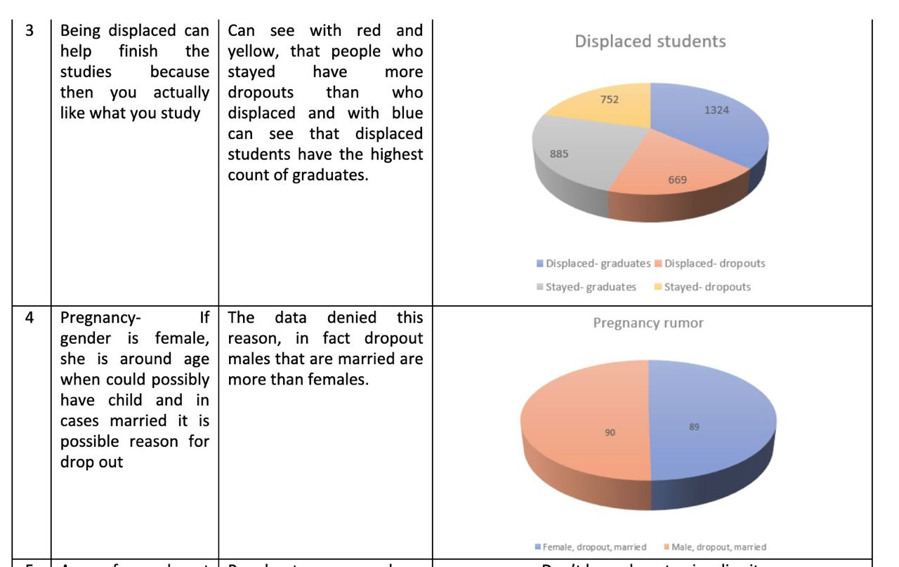
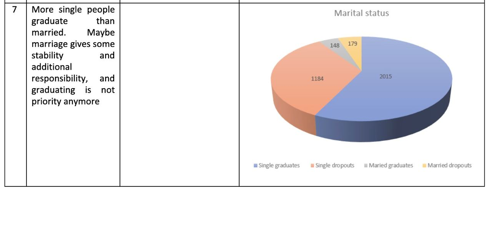

| Data Type | |
|---|---|
| Marital status | int64 |
| Application mode | int64 |
| Application order | int64 |
| Course | int64 |
| Daytime/evening attendance | int64 |
| Previous qualification | int64 |
| Previous qualification (grade) | float64 |
| Nacionality | int64 |
| Mother's qualification | int64 |
| Father's qualification | int64 |
| Mother's occupation | int64 |
| Father's occupation | int64 |
| Admission grade | float64 |
| Displaced | int64 |
| Educational special needs | int64 |
| Debtor | int64 |
| Tuition fees up to date | int64 |
| Gender | int64 |
| Scholarship holder | int64 |
| Age at enrollment | int64 |
| International | int64 |
| Curricular units 1st sem (credited) | int64 |
| Curricular units 1st sem (enrolled) | int64 |
| Curricular units 1st sem (evaluations) | int64 |
| Curricular units 1st sem (approved) | int64 |
| Curricular units 1st sem (grade) | float64 |
| Curricular units 1st sem (without evaluations) | int64 |
| Curricular units 2nd sem (credited) | int64 |
| Curricular units 2nd sem (enrolled) | int64 |
| Curricular units 2nd sem (evaluations) | int64 |
| Curricular units 2nd sem (approved) | int64 |
| Curricular units 2nd sem (grade) | float64 |
| Curricular units 2nd sem (without evaluations) | int64 |
| Unemployment rate | float64 |
| Inflation rate | float64 |
| GDP | float64 |
| Target | object |
Student dropout analysis based on previously acquired educational achievements: A case of the University of Portalegre
Business Analysis, Business Informatics Ms, Fall 2023.
Abstract
.
Abstract
In the world of education, the path to success is often visualized as a linear progression, where students follow a predefined journey from kindergarten to graduation. However, the reality is far more complex. There could be various reasons that come along the study program that led students to deviate from this path. These students have encountered different challenges, circumstances, or a lack of proper resources that have led them to drop out of university.
In this dataset provided to us, we will delve deeper into understanding the reasons why students have dropped out of the university, based on the data at our disposal. We will leverage our social knowledge to comprehend the factors that influenced their decision to drop out and work to prevent such occurrences if the issues are within the university’s purview. Our goal is to offer solutions, support, and the necessary resources to facilitate students’ educational journeys. We will also use the analysis we’ve conducted on the dropout students to learn from their experiences and chart a unique educational pathway with fewer dropouts.
Introduction
Starting from preliminary school we are told that having an education is very important for your future or that without higher education your job possibilities are going to be very limited. While primary education is mandatory, having higher education is not. But why do people actually take their time and resources to pursue it? Well, according to studies the most important factor for pursuing higher education is job acquisition. (Knutsen 2011) Some other factors may include increased income in the existing job, improved work conditions or increased ability for retirement. All in all they do all tie up to materialistic benefits in the end. Of course, other, more intrisic factors include seeking for additional knowledge or self-fulfillment (Cortes et al. 2023). There are also factors like meeting new friends, improving social interaction skills or just wanting to make a difference in the world. Of course factors that cannot be ignored are social pressure (Temple 2009), meaning that having friends that want to pursue higher education can influence ones own decision or influence of family members. Pursuing higher edication is good, but what about people who prematurely end their studies and drop out? What could be the factors that lead to such a decision? Based on the study and datasets that we used for our research there are multiple factors that influence dropping out.
Nevertheless, pursuing higher education and actually getting the degree has some tangible benefits. According to an OECD – Education at a Glance 2019 research paper (OECD 2019), “On average across OECD countries, adults with a short-cycle tertiary degree earn 20% more than adults with upper secondary education. The earnings advantage increases to 44% for those with a bachelor’s degree and to 91% for those with a master’s or doctorPal degree.” With this in mind, it is important for government and educational institutions to ensure high level of graduates in society to ensure economic growth and overall increase in well-being. To measure the success of this goal, it is important to set KPI’s, track them and make educated conclusions on what needs to be done or is being done right to reach the goal of higher educated society.
Target Metrics and KPI
In this particular case, KPI’s will be chosen based on datasets of Portugese High Schools but most likely data can be generalised, atleast for Europe, as the region and sociodemographics are not so different. Even though there are many factors that influence the success of graduation, only factors that can be proven by government and educational institutions will be chosen. After rigorous analysis, we propose the following grades.
Academic support. Based on the dataset students who had support had 3x lower dropout rates than students that didn’t have. This means that governments should be incentivised to allocate a higher amount of budget towards education to give financial aid and motivate students to complete their studies.
Institutional improvements. Again, based on datasets, schools with improvements have 40% less dropout rate than schools without. This is something that can be improved by incentivizing teachers with higher salaries or giving schools more budget to improve their workstations.
Student grades. Datasets tell us that the higher the average grade, the lower the dropout rate. Usually students that have low grades are uninterested in the subjects which could be due to having chosen not the right program for them or that the way lectures and information is presented is uninteresting or outdated. Either way this can be improved. Increasing the possibility that the student has chosen the right program for him can be done by introducing more “open days” in higher education institutions and having more upfront information about what can be expected from programs. The overall lecture performance can be improved by taking more time to have up-to-date information presented and teachers having decent motivation of teaching students. This can be achieved by increasing teacher salaries and institutions having more control over teachers and information they present to students.
Exploratory Data Analysis
Descriptive Statistics
As we have checked, the dataset does not have zero values, so there is nothing to purge inside it. Later on, we get the basic descriptive statistics, shown below.
| Marital status | Application mode | Application order | Course | Daytime/evening attendance | |
|---|---|---|---|---|---|
| count | 4424.00 | 4424.00 | 4424.00 | 4424.00 | 4424.00 |
| mean | 1.18 | 18.67 | 1.73 | 8856.64 | 0.89 |
| std | 0.61 | 17.48 | 1.31 | 2063.57 | 0.31 |
| min | 1.00 | 1.00 | 0.00 | 33.00 | 0.00 |
| 25% | 1.00 | 1.00 | 1.00 | 9085.00 | 1.00 |
| 50% | 1.00 | 17.00 | 1.00 | 9238.00 | 1.00 |
| 75% | 1.00 | 39.00 | 2.00 | 9556.00 | 1.00 |
| max | 6.00 | 57.00 | 9.00 | 9991.00 | 1.00 |
| count | 4424 | 4424 | 4424 | 4424 | 4424 |
| mean | 4.58 | 132.61 | 1.87 | 19.56 | 22.28 |
| std | 10.22 | 13.19 | 6.91 | 15.6 | 15.34 |
| min | 1 | 95 | 1 | 1 | 1 |
| 25% | 1 | 125 | 1 | 2 | 3 |
| 50% | 1 | 133.1 | 1 | 19 | 19 |
| 75% | 1 | 140 | 1 | 37 | 37 |
| max | 43 | 190 | 109 | 44 | 44 |
| Mother's occupation | Father's occupation | Admission grade | Displaced | Educational special needs | |
|---|---|---|---|---|---|
| count | 4424.00 | 4424.00 | 4424.00 | 4424.00 | 4424.00 |
| mean | 10.96 | 11.03 | 126.98 | 0.55 | 0.01 |
| std | 26.42 | 25.26 | 14.48 | 0.50 | 0.11 |
| min | 0.00 | 0.00 | 95.00 | 0.00 | 0.00 |
| 25% | 4.00 | 4.00 | 117.90 | 0.00 | 0.00 |
| 50% | 5.00 | 7.00 | 126.10 | 1.00 | 0.00 |
| 75% | 9.00 | 9.00 | 134.80 | 1.00 | 0.00 |
| max | 194.00 | 195.00 | 190.00 | 1.00 | 1.00 |
| Debtor | Tuition fees up to date | Gender | Scholarship holder | Age at enrollment | |
|---|---|---|---|---|---|
| count | 4424.00 | 4424.00 | 4424.00 | 4424.00 | 4424.00 |
| mean | 0.11 | 0.88 | 0.35 | 0.25 | 23.27 |
| std | 0.32 | 0.32 | 0.48 | 0.43 | 7.59 |
| min | 0.00 | 0.00 | 0.00 | 0.00 | 17.00 |
| 25% | 0.00 | 1.00 | 0.00 | 0.00 | 19.00 |
| 50% | 0.00 | 1.00 | 0.00 | 0.00 | 20.00 |
| 75% | 0.00 | 1.00 | 1.00 | 0.00 | 25.00 |
| max | 1.00 | 1.00 | 1.00 | 1.00 | 70.00 |
| International | Curricular units 1st sem (credited) | Curricular units 1st sem (enrolled) | Curricular units 1st sem (evaluations) | |
|---|---|---|---|---|
| count | 4424.00 | 4424.00 | 4424.00 | 4424.00 |
| mean | 0.02 | 0.71 | 6.27 | 8.30 |
| std | 0.16 | 2.36 | 2.48 | 4.18 |
| min | 0.00 | 0.00 | 0.00 | 0.00 |
| 25% | 0.00 | 0.00 | 5.00 | 6.00 |
| 50% | 0.00 | 0.00 | 6.00 | 8.00 |
| 75% | 0.00 | 0.00 | 7.00 | 10.00 |
| max | 1.00 | 20.00 | 26.00 | 45.00 |
| Curricular units 1st sem (approved) | Curricular units 1st sem (grade) | Curricular units 1st sem (without evaluations) | Curricular units 2nd sem (credited) | |
|---|---|---|---|---|
| count | 4424.00 | 4424.00 | 4424.00 | 4424.00 |
| mean | 4.71 | 10.64 | 0.14 | 0.54 |
| std | 3.09 | 4.84 | 0.69 | 1.92 |
| min | 0.00 | 0.00 | 0.00 | 0.00 |
| 25% | 3.00 | 11.00 | 0.00 | 0.00 |
| 50% | 5.00 | 12.29 | 0.00 | 0.00 |
| 75% | 6.00 | 13.40 | 0.00 | 0.00 |
| max | 26.00 | 18.88 | 12.00 | 19.00 |
| Curricular units 2nd sem (enrolled) | Curricular units 2nd sem (evaluations) | Curricular units 2nd sem (approved) | Curricular units 2nd sem (grade) | |
|---|---|---|---|---|
| count | 4424.00 | 4424.00 | 4424.00 | 4424.00 |
| mean | 6.23 | 8.06 | 4.44 | 10.23 |
| std | 2.20 | 3.95 | 3.01 | 5.21 |
| min | 0.00 | 0.00 | 0.00 | 0.00 |
| 25% | 5.00 | 6.00 | 2.00 | 10.75 |
| 50% | 6.00 | 8.00 | 5.00 | 12.20 |
| 75% | 7.00 | 10.00 | 6.00 | 13.33 |
| max | 23.00 | 33.00 | 20.00 | 18.57 |
The students are from multiple countries, but the overwhelming majority of the students are from Portugal. It would be interesting to see how the students’ admission grade depends on their previous qualification in their home countries, but the samples are scarce. Many students from abroad are from the Ultramarine Territories where it’s more challenging to get comparable education. However, they and inland Portugal students were naturally given some exemptions, as the dataset states 4
. For example, the students admitted per Ordance no. 854 5 were not required to demonstrate the proof of their validity since their received a diploma in secondary education administered in Portuguese (Angola, East Timor, Mozambique, Guinea Equatorial). Students admitted per Ordnance no. 533 6 were from another university in Portugal with overlapping courses covered recently enough so they were not required to repeat them. Finally, those admitted per Ord. no. 612 7 came from other countries but had comparable material in their studies and so their points were recalculated with some amortization.

Due to class imbalance , the variability for the Portuguese is much higher, and while the 3 categories with highest grades are natural, i. e. doctors, masters as higher education, the 3rd is unintuitive (the 10 classes) and we tend to explain it as self-selection and high correlation with other indicators (those entering the university in the 10th grade are more motivated then dwelling in schools in 11th and 12th grades).
Also, there is a drastic imbalance over yet another crucial factor: age. As it was mentioned previously, students of age are far less ubiquitous, can have far more incentives to abandon studies and with smaller potential to apprehension of material. Indeed, this is eloquently manifested on the next graph.

Q. v. the sizes of the bins for dropout students differ far less than the total size for the name of the student.
If the hypothesis about some external factors, The target variable should be much dependent on previous grades,
The datapoint cloud, however, shows that this rule has a lot of exceptions.
We can draw the following observations:
The distribution of admission grades is roughly normal with most students scoring between 60 to 80 marks.
The distribution of previous qualifications (grades) is also the same with most of them having grades in between 12 and 16.
There is seen a positive correlation between admission grade and previous qualification grade indicating students with higher previous qualifications tend to have higher admission grades.
This was the visualization for the few quantitative columns, which shows the natural interconnection between the curricularly accrued units in the 1st and the 2nd year, which are in turn mostly unrelated to the admission grade. This is understandable since the grades are commonly based on the successfulness of the local program and student’s toil, while the students’ backgrounds are commonly different and this puts them into inequitable positions when passing the admission exams.
In these previous graphs, we considered quantitative columns that are more or less exogenous to the dataset (e. g. age and the previous qualification grade are not influenced by the the current grade of the students).
However, the majority of columns of this dataset are qualitative and they are at least partially endogenous as stulk from the decisions during the study. For this, we need to propose a mechanism of influence, then formulate and test a hypothesis via an analysis of discriminate groups.
We also consider the impact of scholarships and other compensations in academic support, which should alleviate the complications associated with adaptations in new environment.

We see that having debt is always a serious impediment against studies because it gives wrong incentives towards directly making money in the short run instead of mastering knowledge that could aid to make altogether greater money in the long run.


In different studies, it is quite common to compare the academic success of a student with the academic successes of ttheir parents as this has both direct and indirect effects , s. a. i. e. both are connected to welfare, but also it can be that there is another channel of knowledge transmission to the younger generation.
Observations : * The bar chart shows that mother’s occupation is quite influential. This influence is greater the pa’s due to traditional effect, and we distinctly see that students whose mothers are ‘white collars’ dropout significantly more rarely than those whose mothers are more engaged in physical labor.
- This also may suggest the mother’s occupation can influence student retention, emphasizing the need for financial support and family engagement.
Data correlation table (quantitative columns only)
NameError: name 'data' is not definedIn the remaining part, we examine the correlations of purely endogenous temporal variables. This does not give a scoop about the source of causation and is not a good predictor, but exhibits an analysis of autocorrelation inside the quasi-temporal data.

We can see that the points for the 1st semester and 2nd semester are correlated which shows that are one’s marks are primary drivers of success and exhibit sizeable correlations


Data Mining
In this matrix for correlations, we already see high correlations between many values. Hence, if we (certainly) consider qualitative variables in our data mining analysis, we must reduce the number of variables because the true dimensionality of the initial space is too high and virtually all ways of embedding are too costly and prohibitive given a relatively small amount of datapoints in this dataset. First our common step would be to dispose of multicollinear columns.
High dimensionality prevents intuitive DBSCAN threshold setting and some inferior algorithms as TSNE.
After we perform the PCA, we select estimators from various standard families that are idependently fine-tuned and then, by F1 measure, the model that is most precise in predicting the outcome is rendered. The results of the best models are given in leaderboard below in Table 2.
| Model | Accuracy | AUC | Recall | Prec. | F1 | Kappa | MCC | TT (Sec) | |
|---|---|---|---|---|---|---|---|---|---|
| catboost | CatBoost Classifier | 0.7290 | 0.8626 | 0.7290 | 0.7099 | 0.7150 | 0.5443 | 0.5491 | 1.5310 |
| gbc | Gradient Boosting Classifier | 0.7293 | 0.8674 | 0.7293 | 0.7124 | 0.7147 | 0.5426 | 0.5494 | 0.4880 |
| et | Extra Trees Classifier | 0.7271 | 0.8606 | 0.7271 | 0.7068 | 0.7105 | 0.5377 | 0.5446 | 0.0780 |
| lightgbm | Light Gradient Boosting Machine | 0.7248 | 0.8591 | 0.7248 | 0.7044 | 0.7092 | 0.5357 | 0.5413 | 0.7420 |
| rf | Random Forest Classifier | 0.7255 | 0.8644 | 0.7255 | 0.7041 | 0.7088 | 0.5357 | 0.5420 | 0.1360 |
| lda | Linear Discriminant Analysis | 0.7190 | 0.8560 | 0.7190 | 0.7047 | 0.6984 | 0.5163 | 0.5310 | 0.0290 |
| ada | Ada Boost Classifier | 0.7071 | 0.8237 | 0.7071 | 0.6952 | 0.6956 | 0.5077 | 0.5134 | 0.0600 |
| qda | Quadratic Discriminant Analysis | 0.7113 | 0.8471 | 0.7113 | 0.6939 | 0.6892 | 0.5023 | 0.5166 | 0.0380 |
| knn | K Neighbors Classifier | 0.6945 | 0.8128 | 0.6945 | 0.6716 | 0.6792 | 0.4882 | 0.4917 | 0.0380 |
| ridge | Ridge Classifier | 0.7125 | 0.0000 | 0.7125 | 0.6846 | 0.6676 | 0.4912 | 0.5196 | 0.0220 |
| dt | Decision Tree Classifier | 0.6237 | 0.7070 | 0.6237 | 0.6283 | 0.6251 | 0.3907 | 0.3914 | 0.0290 |
| lr | Logistic Regression | 0.4754 | 0.5142 | 0.4754 | 0.3960 | 0.4313 | 0.0909 | 0.0956 | 0.4810 |
| nb | Naive Bayes | 0.4997 | 0.5850 | 0.4997 | 0.3821 | 0.3679 | 0.0198 | 0.0399 | 0.0230 |
| dummy | Dummy Classifier | 0.4994 | 0.5000 | 0.4994 | 0.2494 | 0.3326 | 0.0000 | 0.0000 | 0.0520 |
| svm | SVM - Linear Kernel | 0.3043 | 0.0000 | 0.3043 | 0.2231 | 0.2482 | 0.0001 | -0.0007 | 0.0290 |
Thus, the best model by F1 measure is CatBoostClassifier, which is renowned for scoring fairly well on tabular data, while ordinary GBC is the most second to prime and the most robust one, featuring best conventional recall, accuracy, and precision metrics.
However, while all top models in Table 2 demonstrate significant improvement over a dummy classifier and other simplistic models such as Logistic Regression, the scores are still which indicates that reduction of dimensionality, which is inevitable under given class imbalance, has come at a price of variance loss, or, alternatively, all the covariates do not explain sufficiently well the outcome of studies: in academic success, as in life, a lot depends on the proper characteristics of a person which are difficult to elicit and much is undetermined. After all, it is a matter of principle whether to continue studying despite all ordeals.
Conclusion
With this analysis, we have some valuable insights some crucial factors like Academic support, socioeconomic factors, previous qualifications, and others play a significant role in student retention.
The observed patterns imply a lot to stress in the lives of students and their associates. First, we strive to insentivize parents to improve their labour efficiency and pursue greater carreer so that ultimately they could dedicate more time to their children’s education, and proactively stir their self-propelled interest. Additionally, we could provide financial assistance to those who are struggling to pay with if this is contemporaneous with a significant degradation in their university marks, as this subrogates the stimuli for a person in an age where they are most perceptive to knowledge and is a good predictor of a dropout. Also importantly, we could teach the students, especially going on their second studies, that it is quite unlikely that they are going to get high grades or exit the university without proper time management and confirmation that they assign top priority to their studies. They are also advised to make that clear to all their relatives and stakeholders who might underestimate the effects of such a change. Although this could result in a reduction of enthusiastic entrants, this would increase at least the KPI of retention and arguably also increase the KPI on number of diplomas issued, because with fewer but more motivated students the university would have more time to dedicate to most obstinate pending alumni.
Addressing these factors carefully can effectively lead to dropout rates reduction and improve overall student outcomes
References
Cortes, Sylvester, Alma Agero, Elena Maria Agravante, Janelyn Arado, Cynthia Anne Arbilon, Eddalin Lampawog, Arlene Fe Letrondo, et al. 2023. “Factors Influencing Students’ Intention to Enroll in Bachelor of Science in Biology: A Structural Equation Modelling Approach.” Cogent Education 10 (2): 2273635. https://doi.org/10.1080/2331186X.2023.2273635.
Knutsen, David. 2011. “Motivation to Pursue Higher Education.” Ed.D. Dissertations, May. https://digitalcommons.olivet.edu/edd_diss/26.
OECD. 2019. Education at a Glance 2019: OECD Indicators. Education at a Glance. OECD. https://doi.org/10.1787/f8d7880d-en.
Temple, Shawn. 2009. “Factors That Influence Students’ Desires to Attend Higher Education.” Seton Hall University Dissertations and Theses (ETDs), January. https://scholarship.shu.edu/dissertations/420.
Footnotes
Rīga Technical University↩︎
Rīga Technical University↩︎
Rīga Technical University↩︎
Link to the dataset description: https://archive.ics.uci.edu/dataset/697/predict+students+dropout+and+academic+success↩︎
Link to the source document: https://dre.tretas.org/dre/106607/portaria-854-B-99-de-4-de-outubro↩︎
Link to the source document: https://dre.tretas.org/dre/104726/portaria-533-A-99-de-22-de-julho↩︎
Link to the source document: https://dre.tretas.org/dre/51542/portaria-612-93-de-29-de-junho↩︎